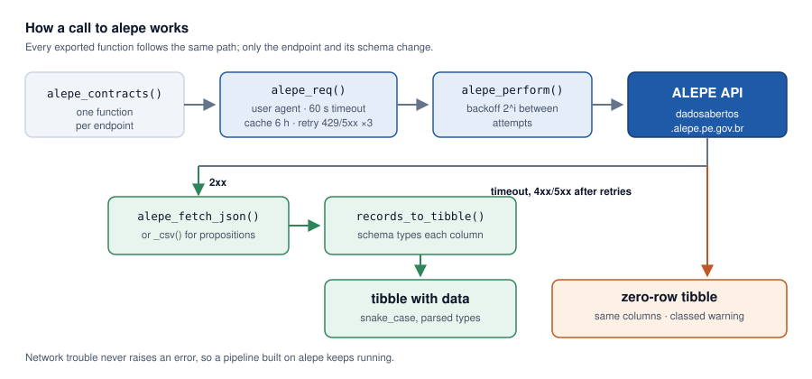

Tidy access to the open data API of the Legislative Assembly of the State of Pernambuco, Brazil (ALEPE): representatives, staff, positions, departments, remuneration, contracts, procurement, and legislative propositions — as tibbles with clean names and parsed types.
- Built on httr2: local caching, automatic retries with exponential backoff, descriptive user agent.
- Graceful failures: network problems warn and return typed zero-row tibbles — your pipeline keeps running.
- Friendly progress messages via cli, silenceable with
options(alepe.quiet = TRUE).
Installation
# CRAN (once accepted)
install.packages("alepe")
# Development version
pak::pak("StrategicProjects/alepe")Quick start
library(alepe)
library(dplyr)
# Current representatives
alepe_representatives()
# Permanent staff, largest departments
alepe_staff(status = "permanent") |>
count(nome_lotacao, sort = TRUE)
# Contracts active today
alepe_contracts() |>
filter(vigencia_inicio <= Sys.Date(), vigencia_fim >= Sys.Date())
# Bills of a given year
alepe_bills(year = 2024)Filter values use an English vocabulary ("permanent", "commissioned", "seconded"), but the original API terms ("efetivo", "comissionado", "a-disposicao") are accepted as well. Column names keep the official Portuguese field names, normalized to snake_case, so results stay traceable to the source.
How it works
Every exported function is a thin wrapper over the same core: a cached, retrying request whose response is typed into a tibble by a documented schema. When the API cannot be reached, the call warns and returns a zero-row tibble with those same columns instead of raising an error.

Em português
Cada função tem um alias com o nome do próprio endpoint da API, para quem prefere manter o pipeline inteiro em português. Mesmos argumentos, mesmos padrões, mesmo resultado:
alepe_parlamentares()
alepe_servidores(status = "efetivo")
alepe_contratos()
alepe_projetos(ano = 2024)alepe_cargos(), alepe_lotacoes(), alepe_remuneracao(), alepe_licitacoes(), alepe_indicacoes(), alepe_requerimentos() and alepe_limpar_cache() complete the set — see ?alepe_aliases.
Related packages
Part of a family of packages for Brazilian public data sharing the same httr2/cli design, developed at CASTLab/UFPE: transferegovr, tcepe, comex, ibger.
Code of Conduct
Please note that this project is released with a Contributor Code of Conduct. By contributing you agree to abide by its terms.